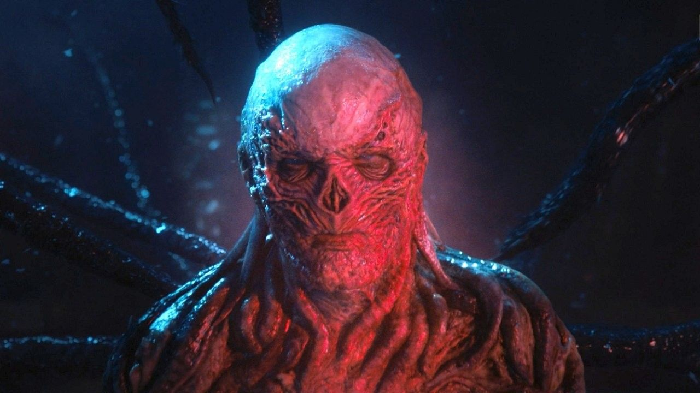
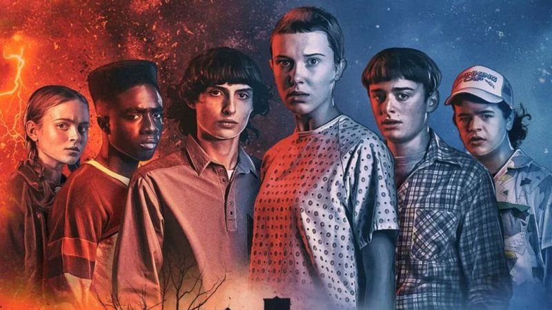
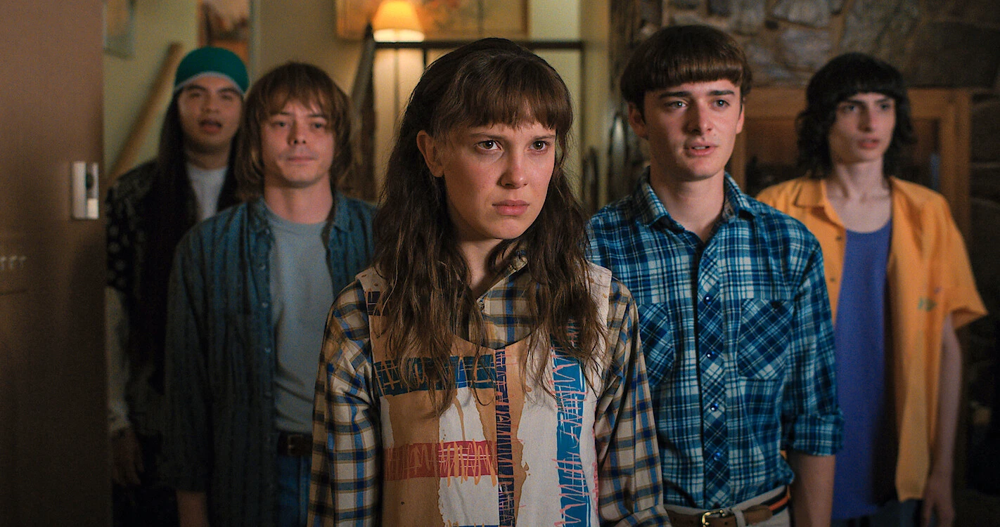

O mundo Invertido
O Mundo Invertido é uma dimensão alternativa e sombria apresentada na série de sucesso da Netflix, Stranger Things. Trata-se de uma cópia exata e distorcida da cidade de Hawkins, mas que permanece congelada no tempo no dia 6 de novembro de 1983
Strager Things Vol. 4
momento em que a personagem Eleven fez contato físico com um Demogorgon e abriu acidentalmente o portal principal para essa realidade.
A segunda serie mais vista no Mundo
- 
- 
- 
O Clube Dragoes
Visualmente, o Mundo Invertido é um local opressivo, caracterizado por uma atmosfera escura, empoeirada e decadente.